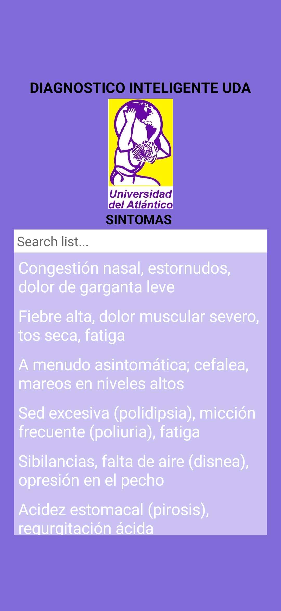
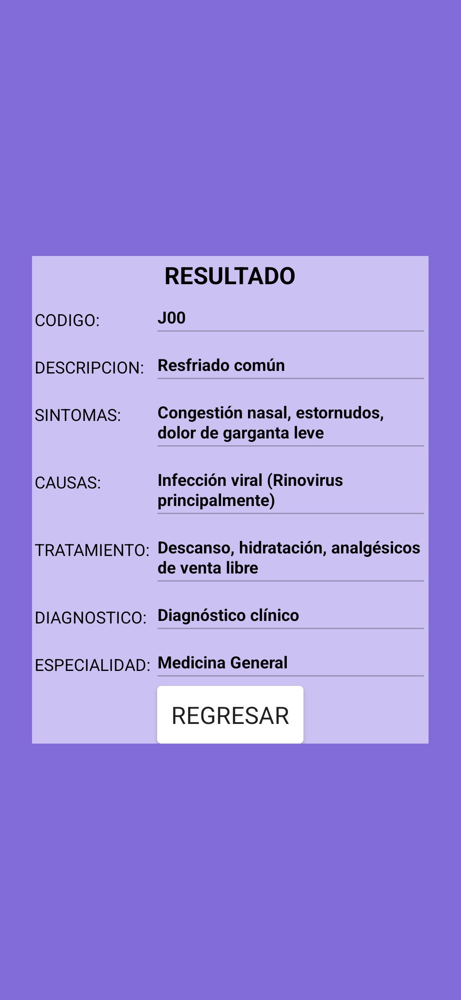

Brinda una primera orientación ante síntomas de salud, permitiendo tomar decisiones informadas mientras se llega a una consulta médica.

Selecciona los síntomas que presenta el paciente
Familias pueden tener una referencia rápida ante malestares comunes y saber si es necesario acudir a un centro de salud.
Profesores y enfermeros escolares pueden utilizarla para evaluar síntomas de estudiantes y actuar en consecuencia.
Voluntarios y personal en terreno pueden hacer triajes rápidos y priorizar casos más urgentes.

Ejemplo: Resfriado común (código J00)
La app muestra el código de enfermedad, descripción, síntomas, causas y tratamiento recomendado, así como la especialidad médica sugerida.
Disponible para Android en formato APK. Haz clic en el botón para descargar directamente.
Descargar APP* El archivo se descargará automáticamente al hacer clic. Peso aproximado: 15-20 MB.